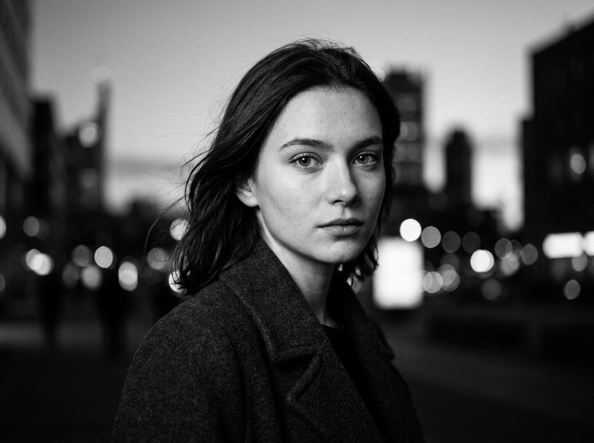
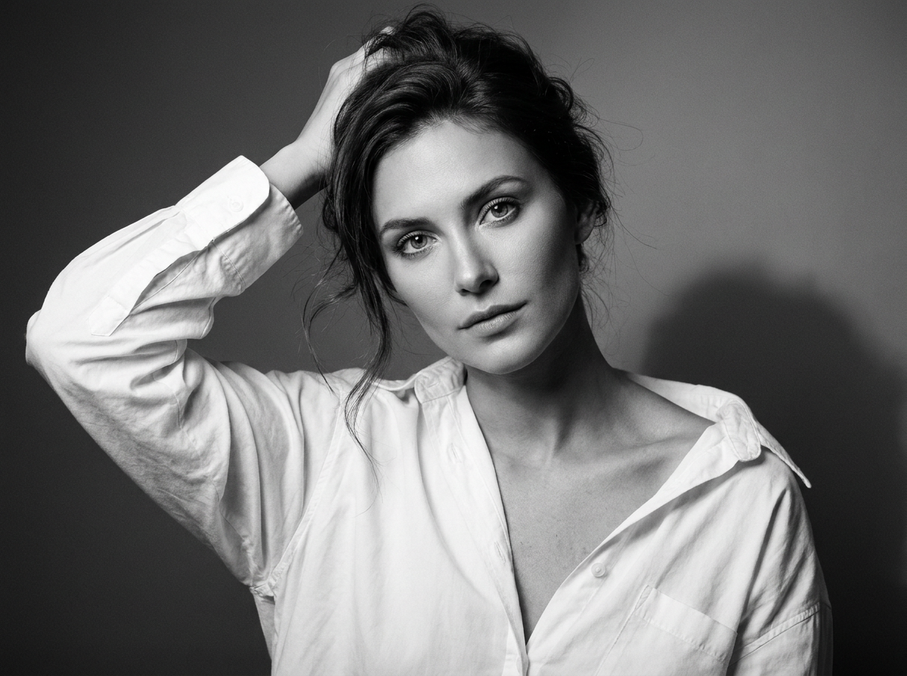
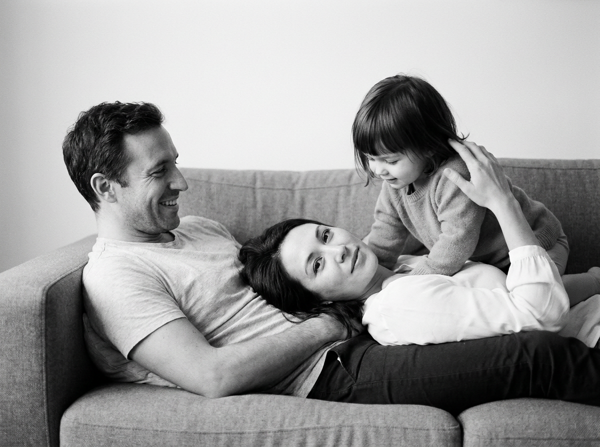
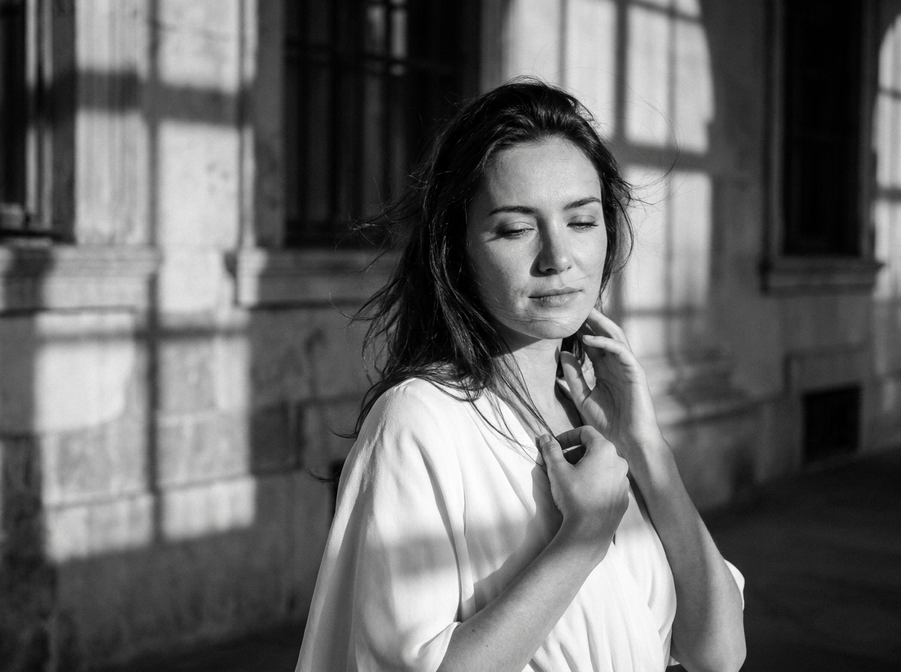
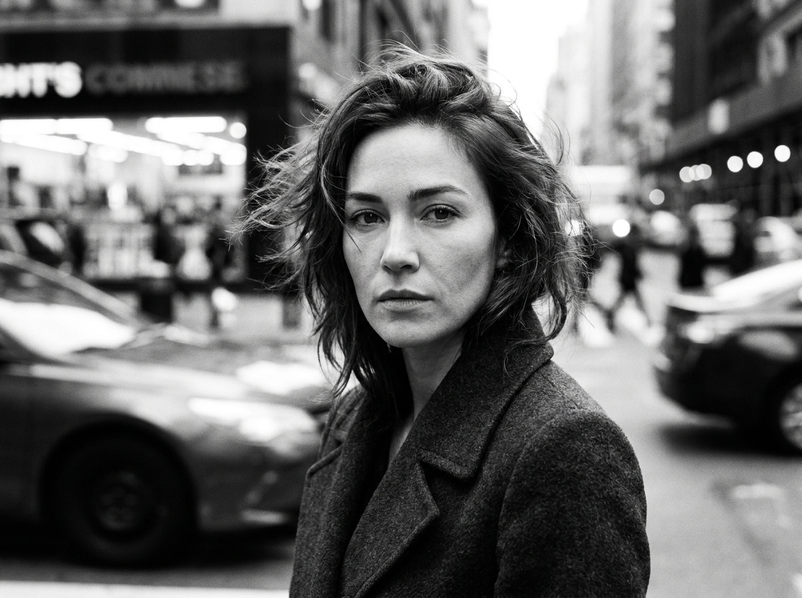
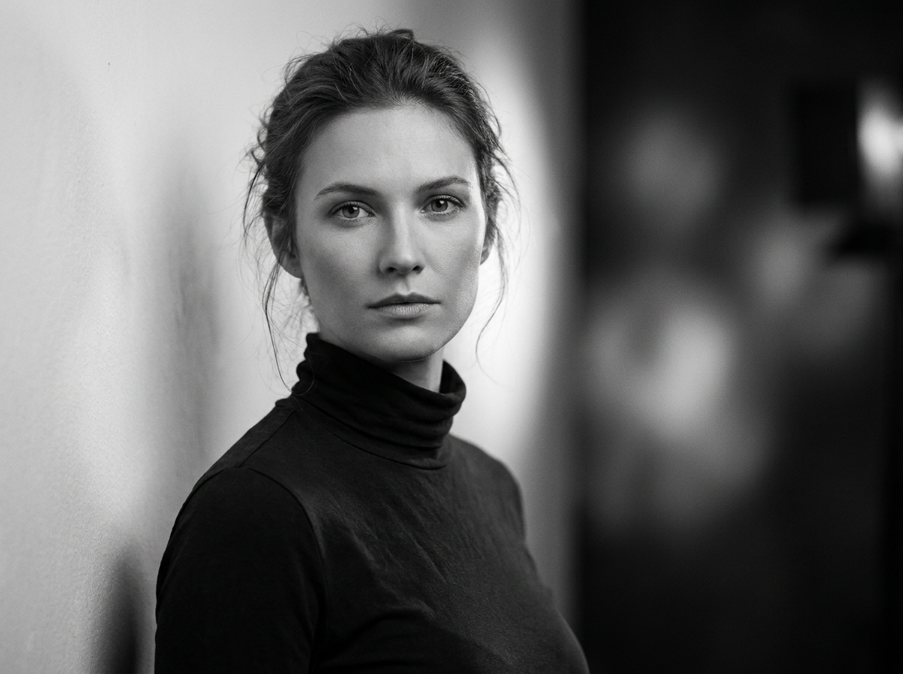
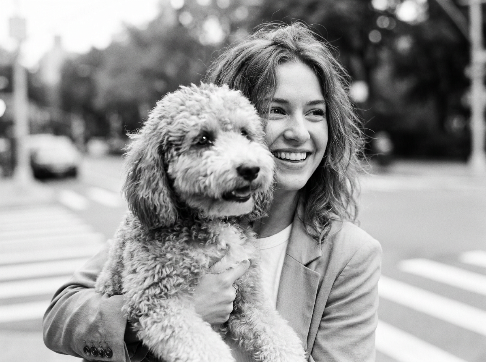
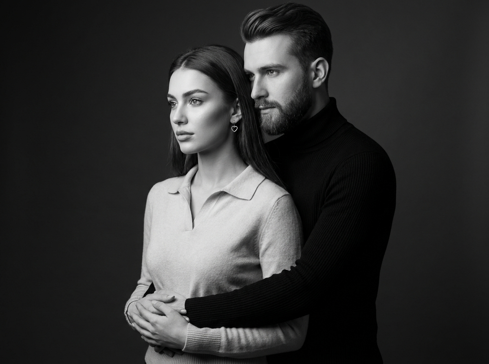
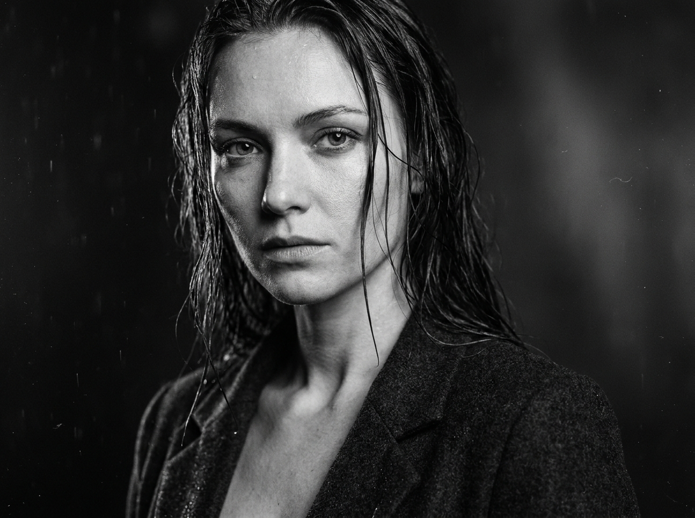
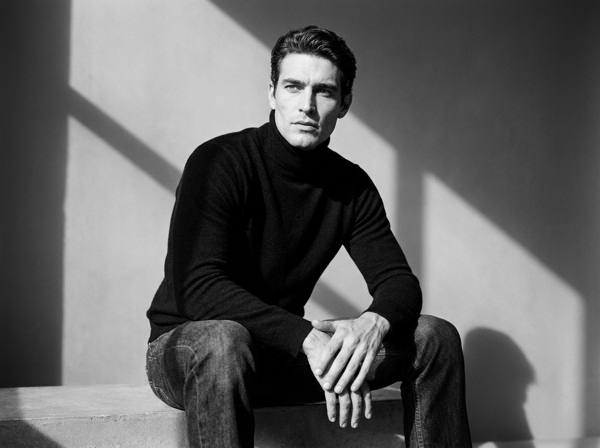

Чёрно-белая ИИ-фотосессия: 10 промптов для нейросети

Обычная фотосессия требует локации, света, команды и удачного настроения в кадре. Нейросеть решает эту задачу за несколько попыток: можно собрать выразительный чёрно-белый портрет дома, на улице или в студии, сохранив узнаваемую внешность по референсу.
В подборке — десять сценариев с разной атмосферой: от fashion-съёмки с ветром и движением до семейного фото на диване, романтического портрета пары, кадра с собакой и мокрого драматичного close-up. Каждый промпт уже содержит композицию, свет, одежду и характер изображения.
Как сгенерировать такое фото: пошагово
Нужен снимок анфас при ровном свете, лицо в кадре целиком, без тёмных очков и головных уборов. Разрешение от 1000 пикселей по короткой стороне. Чем чётче исходник, тем точнее модель повторит черты.
Выберите сценарий ниже и нажмите «Копировать» — текст уйдёт в буфер целиком, вместе с командой сохранения внешности. Эта команда стоит первой строкой и отвечает за то, чтобы на выходе было ваше лицо, а не случайное.
Кнопка «Сгенерировать» рядом с каждым промптом открывает модель в новой вкладке. Nano Banana Pro работает с референсом лица — в отличие от моделей, которые генерируют портрет с нуля и узнаваемость теряют.
Промпт — в поле ввода, портрет — через загрузку референса. Порядок значения не имеет, но без референса команда сохранения внешности работать не будет: модели нечего сохранять.
Для сторис и ленты берите 9:16, для превью и обложек — 4:3. Первый результат редко идеален: если поза или свет ушли не туда, поправьте соответствующую часть промпта и запустите заново. Обычно хватает двух-трёх итераций.
10 промптов для генерации
1. Уличный портрет с ветром
Строго сохранить внешность по загруженному референсу: черты лица, пропорции, мимику и текстуру кожи без изменений. Фотореалистичный вертикальный чёрно-белый fashion-портрет в духе cinematic noir, снятый на улице или в длинном архитектурном коридоре. Средний план: женщина показана от груди или пояса до макушки, корпус развёрнут примерно на 3/4, плечи расслаблены. Голова повёрнута к камере, взгляд прямо в объектив либо немного мимо него, глаза остаются хорошо читаемыми. Выражение уверенное и слегка задумчивое, губы расслаблены, допустима едва заметная полуулыбка. Волосы развеваются на ветру, отдельные пряди движутся, но лицо остаётся резким. Фон сильно расфокусирован, мягкое боке, естественная уличная среда без лишних деталей. Жёсткий направленный свет создаёт высокий контраст, сохраняя натуральную текстуру кожи и волос. Лёгкая плёночная зернистость, film look, реалистичная тональность серого, высокая детализация, вертикальное соотношение 4:5.
2. Студийный портрет с жестом

Строго сохранить внешность по загруженному референсу: черты лица, пропорции, мимику и текстуру кожи без изменений. Создай реалистичный вертикальный чёрно-белый editorial beauty-портрет в студии. Кадр по грудь: в поле зрения лицо, линия плеч и часть рук. Женщина стоит в лёгком развороте 3/4, корпус направлен немного в сторону, а взгляд спокойно и уверенно обращён в объектив. Одна рука поднята к макушке и касается волос, словно модель поправляет укладку; вторая опущена, придерживает ткань рубашки или находится рядом с плечом. Губы сомкнуты, выражение нейтральное. Волосы уложены естественно, с несколькими выбившимися прядями, часть локонов может закрывать край лица. Используй мягкий glamour-свет вместе с контрастной fashion-схемой, чтобы глаза и волосы были детализированы, а кожа выглядела натурально. Добавь умеренное плёночное зерно, high contrast, чёткие контуры лица, мягкие тени и вертикальный кадр 4:5.
3. Семейный кадр на диване

Строго сохранить внешность по загруженному референсу: черты лица, пропорции, мимику и текстуру кожи без изменений. Фотореалистичное домашнее семейное фото в чёрно-белой плёночной эстетике, без театральной постановочности. Вертикальная композиция, камера на уровне глаз человека, который сидит или стоит рядом, перспектива мягкая, без широкоугольных искажений. На сером тканевом диване, где видны подлокотники и мягкие складки, расположены три человека по диагонали слева направо. Слева отец — главная фигура этой стороны, он лежит на диване и улыбается. Справа или ближе к центру мать расслабленно лежит на диване, её лицо повёрнуто вверх и немного к камере. Третий член семьи занимает оставшееся место в диагональной композиции, позы естественно соприкасаются. На заднем плане только светлая почти однотонная стена, без картин, надписей и предметов. Свет рассеянный, как из окна, без жёстких теней. Мягкие градации серого, умеренный контраст, лёгкое зерно, лайфстайл-ощущение, вертикальный формат 4:5.
4. Световая сетка на стене

Строго сохранить внешность по загруженному референсу: черты лица, пропорции, мимику и текстуру кожи без изменений. Фотореалистичный вертикальный чёрно-белый fashion-портрет с атмосферой cinematic noir и архитектурной уличной съёмки. Женщина стоит одна у стены или фасада; в фоне видны крупные прямоугольники света и перекрещивающаяся сетка теней, будто их отбрасывает оконная рама. Кадр от головы до верхней части торса, примерно до талии: открыты шея, плечи и часть белого платья. Корпус развёрнут на 3/4, голова слегка обращена к камере. Одна рука поднята к шее или щеке в мягком жесте, вторая прижимает ткань платья к груди либо легко придерживает плечо. Сохрани естественную фактуру кожи, волос и ткани, без пластиковой ретуши. Свет драматичный, контрастный, но детали в тенях не теряются. Добавь мягкое плёночное зерно, реалистичный film look, естественную мимику и вертикальное соотношение 4:5.
5. Портрет в городском движении

Строго сохранить внешность по загруженному референсу: черты лица, пропорции, мимику и текстуру кожи без изменений. Сделай фотореалистичный вертикальный чёрно-белый fashion street portrait в стиле кинематографичного noir и репортажной плёночной фотографии. Крупный или средне-крупный план: голова и верхняя часть торса. Женщина идёт по улице, лицо обращено к камере, взгляд прямо в объектив, выражение спокойное и немного серьёзное. Голова повёрнута на 3/4, подбородок слегка опущен, шея вытянута. Волосы подхватывает ветер: пряди обрамляют лицо и движутся естественно, без разрывов и странных слияний. Фон получи панорамированием: фасады, витрины и очертания улицы заметны, но сильно смазаны движением и размыты. Лицо и глаза остаются резкими. Используй высокий контраст, натуральную кожу, мягкую плёночную зернистость и выразительный motion blur только на заднем плане. Вертикальный кадр 4:5, реалистичная чёрно-белая тональность.
6. Нуар у дверного проёма

Строго сохранить внешность по загруженному референсу: черты лица, пропорции, мимику и текстуру кожи без изменений. Фотореалистичный чёрно-белый fashion-портрет в вертикальном формате, с low-key студийным светом и editorial noir-настроением. Крупный план до груди: голова, шея, плечи и верх торса. Женщина стоит у стены или в дверном проёме. Слева расположена светлая вертикальная плоскость или узкая светлая кайма, справа — тёмный фон, растворяющийся в мягком боке. Камера фронтальная либо слегка смещена в 3/4, лицо направлено к объективу, взгляд уверенный и спокойный. На границе света возле лица сформируй мягкий световой ореол и плавный переход в тень, как от одного направленного бокового источника. Глаза и кожа должны быть резкими и детализированными, задний план — сильно размытым, с атмосферным рассеянием света. Натуральная текстура волос и кожи, высокий контраст, мягкий film grain, кинематографичная градация серого, вертикальное соотношение 4:5.
7. Девушка с собакой

Строго сохранить внешность по загруженному референсу: черты лица, пропорции, мимику и текстуру кожи без изменений. Фотореалистичный винтажный чёрно-белый street candid-портрет с мягким контрастом, лёгким плёночным зерном и реалистичной фактурой шерсти. Вертикальный кадр снят примерно с уровня груди или талии девушки, слегка снизу по отношению к её лицу, чтобы собака на переднем плане выглядела выразительно. Девушка находится слева или в центре и занимает около 40–55% ширины кадра; она показана по пояс и крепко держит собаку на руках. Собака лежит корпусом на её руках, её голова выходит в нижнюю правую и частично центральную зону, ближе к объективу. Морда повёрнута к камере или немного влево, глаза чётко видны. Голова собаки слегка перекрывает лицо девушки. Девушка смотрит чуть в сторону от камеры и ярко улыбается. Улица остаётся ненавязчивым фоном, без лишних деталей. Естественные лица, корректные лапы и руки, мягкий дневной свет, вертикальный формат 4:5.
8. Объятие в студийном свете

Строго сохранить внешность по загруженному референсу: черты лица, пропорции, мимику и текстуру кожи без изменений. Высокохудожественный фотореалистичный студийный портрет молодой пары в классической чёрно-белой стилистике. Мужчина стоит позади женщины и нежно обнимает её за талию; его поза передаёт спокойную уверенность, защиту и близость. Руки мужчины мягко сцеплены на её животе, без напряжения и неестественных пальцев. На нём чёрный облегающий бадлон с заметной фактурой рубчиковой вязки, подчёркивающий атлетичное телосложение. У женщины длинные прямые волосы, гладко уложенные или свободно ниспадающие по плечам, выразительные скульптурные черты. Она немного поворачивает голову в сторону, смотрит вдаль или мимо камеры; настроение мечтательное и спокойное, с лёгкой задумчивостью. На ней светлый кашемировый свитер с воротником-поло и мелкой рубчиковой текстурой, визуально перекликающейся с одеждой мужчины. Мягкий студийный свет, классическая композиция, натуральная кожа, высокая детализация тканей, вертикальный кадр 4:5.
9. Мокрые волосы и дождь

Строго сохранить внешность по загруженному референсу: черты лица, пропорции, мимику и текстуру кожи без изменений. Фотореалистичный вертикальный чёрно-белый портрет с high-contrast cinematic-настроением, editorial noir и эффектом мокрых волос после дождя. Экстремальный крупный план: в кадре лицо, шея и верх плеч до ключиц или середины груди. Женщина слегка развёрнута на 3/4, подбородок немного опущен, взгляд направлен прямо в камеру либо чуть рядом с объективом. Выражение спокойное, серьёзное и задумчивое; губы расслаблены, матовые, без улыбки. Волосы выглядят влажными: пряди естественно падают на лоб и щёки, образуя рамку вокруг лица, остальные уходят вниз по плечам. Кожа должна сохранять реальную текстуру и небольшие естественные детали, без глянцевой пластиковой ретуши. Фон мягко размыт и не отвлекает, в светах ощущается влажная дождливая атмосфера. Добавь кинематографичный плёночный эффект, мягкое зерно, высокую детализацию глаз и лица, вертикальное соотношение 4:5.
10. Мужчина на светлой ступени

Строго сохранить внешность по загруженному референсу: черты лица, пропорции, мимику и текстуру кожи без изменений. Фотореалистичный чёрно-белый fashion editorial-портрет мужчины с драматичным контровым светом, low-key атмосферой и плёночной кинематографичной картинкой. Вертикальный кадр среднего или почти полного роста: мужчина сидит на светлой горизонтальной поверхности, похожей на ступень или низкую площадку; в композиции видны лицо, торс, колени и ноги. Тело развёрнуто к камере на 3/4. Руки сложены перед корпусом: одна ладонь лежит поверх другой, пальцы имеют естественную анатомию, без лишних фаланг и слияний. Голова слегка наклонена, лицо смотрит в объектив или немного в сторону, выражение спокойное и серьёзное. На фоне минималистичная студийно-уличная среда с глубокими тенями. Контровой источник очерчивает силуэт и плечи, лицо частично освещено мягким направленным светом. Реалистичная кожа, ткани и фактура одежды, high contrast noir, вертикальный формат 4:5.
Что важно учесть в этом стиле
Чёрно-белый кадр держится на светотени, а не на цветовых акцентах. Поэтому в промпте лучше сразу задавать направление источника, глубину теней, контраст и характер фона. Для мягкого fashion-портрета подойдут рассеянный свет и плавные градации серого, для noir — боковой или контровой источник с плотными тенями.
Референс лица не заменяет описание сцены. Отдельно указывайте крупность плана, поворот головы, положение рук, движение волос и детали одежды. Если нужен реалистичный результат, добавляйте натуральную текстуру кожи, корректную анатомию пальцев, резкость на глазах и умеренную ретушь.
Идеи для вариаций
- Замените улицу на лестничную клетку, вокзал или пустой кинотеатр.
- Добавьте эффект света от жалюзи, витрины или одинокого фонаря.
- Попросите камеру имитировать объектив 85 мм при f/1.8 для мягкого боке.
- Для более документального кадра используйте 50 мм, f/2.8 и заметное зерно ISO 800.
- Сделайте серию в разрешении 2048×2560 пикселей, меняя только эмоцию и положение головы.
- Попробуйте Nano Banana Pro для варианта с той же композицией, но другой одеждой.
Как собрать свой промпт
Начните с формата и жанра: вертикальный портрет, чёрно-белая fashion-съёмка или домашний лайфстайл. Затем задайте героя, локацию, одежду, позу и выражение лица. После этого опишите свет: его направление, жёсткость, контраст и область резкости.
В финале добавьте технические параметры. Например: объектив 85 мм, диафрагма f/1.8, фокус на глазах, фон в боке, соотношение 4:5, разрешение 2048×2560. Меняйте за один раз только один параметр и делайте 4–8 генераций, иначе будет сложно понять, что именно улучшило результат.
Ошибки, из-за которых кадр не получается
- Слишком общая сцена. Фраза «красивая чёрно-белая фотосессия» не задаёт ни позу, ни свет, ни композицию.
- Противоречивое освещение. Одновременные требования к жёсткому солнцу, мягкому окну и туманному студийному свету путают модель.
- Перегруженный фон. Если нужны лицо и глаза в центре внимания, заранее укажите боке, размытие или минималистичную локацию.
- Неуточнённая крупность. Без слов «по грудь», «по пояс» или «экстремальный крупный план» нейросеть может обрезать руки и одежду.
- Сложные жесты без контроля. Для рук и объятий прописывайте, где находится каждая ладонь, а при артефактах делайте отдельную перегенерацию области.
- Слишком сильная ретушь. Просите натуральную текстуру кожи и умеренную детализацию, иначе лицо станет пластиковым.
Частые вопросы
Как сделать такое ИИ-фото бесплатно?
Для первых попыток подойдут Kandinsky и Шедеврум: они позволяют генерировать изображения без оплаты, но могут ограничивать число запросов, разрешение и точность работы с референсом. Krea AI и Arena.ai удобны для тестов разных моделей, однако доступность функций и лимиты меняются. При загрузке фото лица проверяйте правила сервиса: референс может использоваться только для стилизации, а сходство иногда получается нестабильным.
Как сохранить сходство с человеком на референсе?
Загрузите чёткий снимок лица без фильтров и сильного поворота головы. В промпте описывайте сцену, а не пытайтесь заново перечислять все черты внешности. Для точности используйте несколько изображений одного человека, если сервис это поддерживает, и выбирайте лучший результат из 6–10 генераций.
Какой формат выбрать для чёрно-белой фотосессии?
Для портрета и публикации в социальных сетях удобно соотношение 4:5 или 2:3. Указывайте вертикальную ориентацию заранее и задавайте разрешение не ниже 1536×1920 пикселей. Если планируется печать, лучше генерировать исходник максимального доступного размера и отдельно увеличивать его без изменения композиции.
Почему нейросеть искажает руки и волосы?
Сложные перекрытия, движение и мелкие пальцы остаются трудными для генерации. Упростите жест, точно опишите положение каждой руки, попросите резкость на лице и укажите, что размытие должно быть только на фоне. Волосы лучше описывать как отдельные естественные пряди без разрывов, лишних локонов и слияния с лицом.